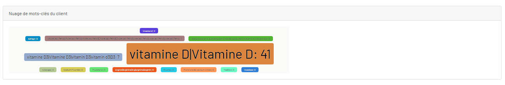
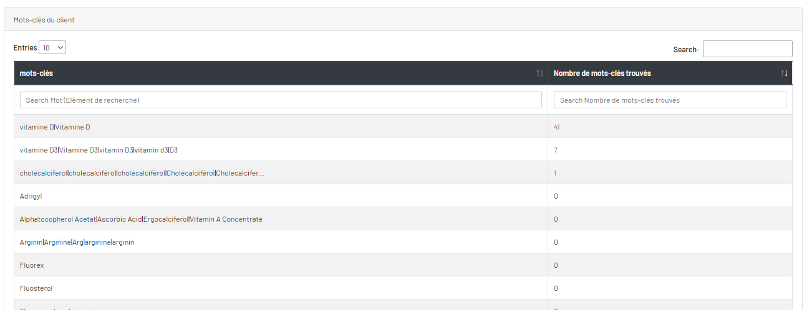

Résultats de mots-clés trouvés du client
Il y a deux blocs. Le bloc 1 est la nuage de mots-clés de client. Le bloc 2 est les mots-clés du client et ses nombres à trouvés.

Dans la nuage, il y a le mot-clé et son nombre trouvé.

Dans la table ce sont les mots-clés et ses nombres trouvés.